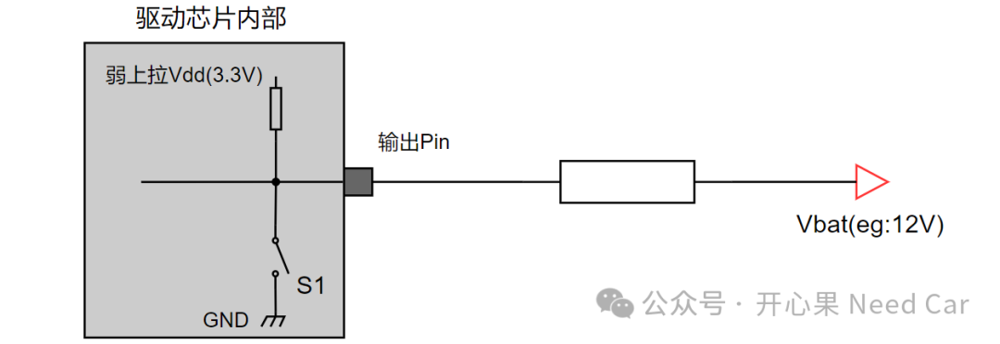

在实际的工程中，搞诊断的小伙伴，会碰到很多硬件诊断需求。比如：某个执行器的对地短路（Short to Ground）、对电源短路（Short to Battery）等等。那么，到底什么是对地短路，什么是对电源短路，什么又是开路呢？工程中，又是如何获取监控对象的短接情况呢？这些故障又是如何存储到芯片中的呢？带着这些疑问，本文展开讨论。我们知道，诊断存在目的是为了及时发现车辆问题，如果车辆故障严重，则需要进行必要的功能降级，eg：降速、限扭等，以此确保驾/乘人员安全。如果要监控车辆的状态，首先需要明确诊断的对象（Object），只有明确了诊断对象，才能进一步评估如何"去抖"，如何报故障码，以及如何存储故障信息等动作。而工程中，我们常常听到的"对地短路故障"、"对电源短路故障"、"开路故障"，该如何理解呢？（一）概念解析
我们以低边驱动（开关位于负载和地之间）为例，讨论如上关注的问题，示意如下：
